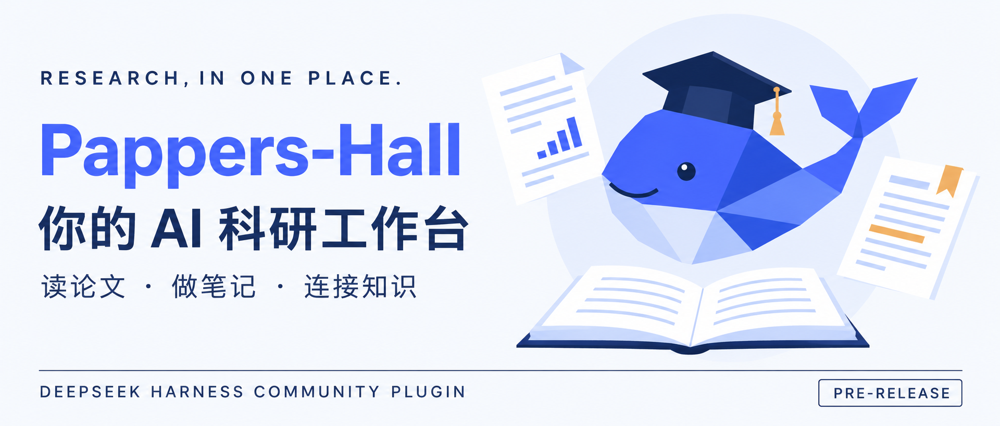
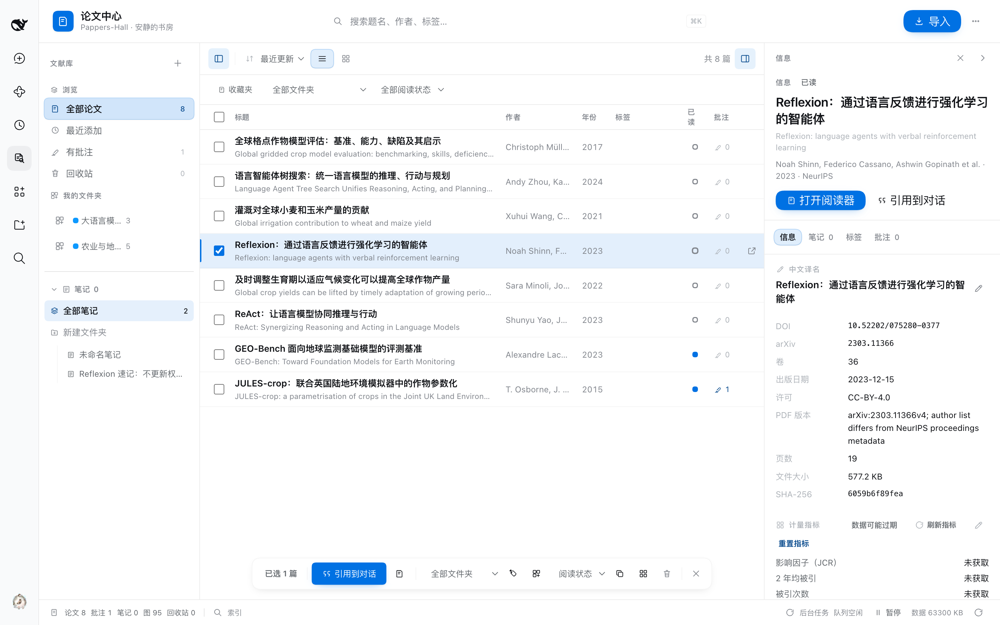
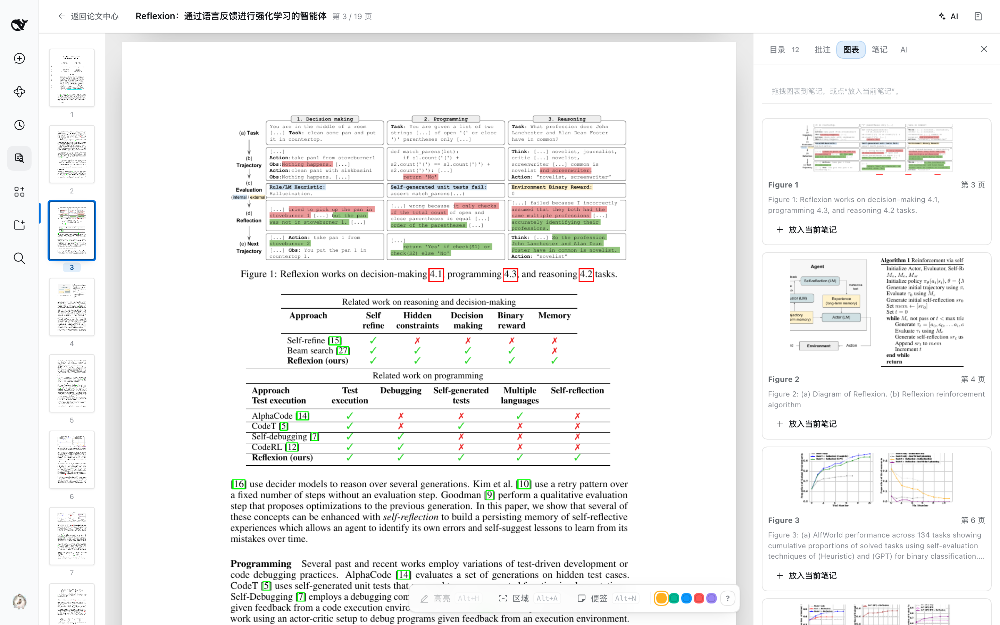
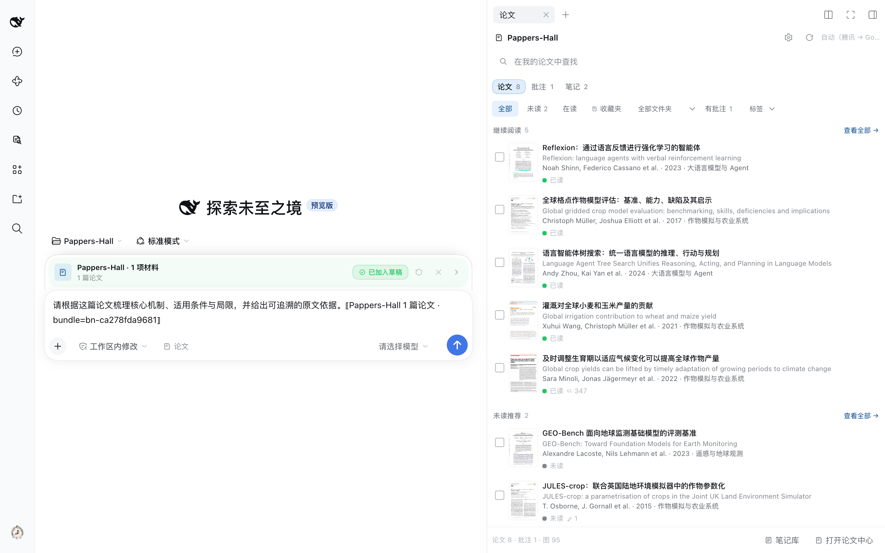
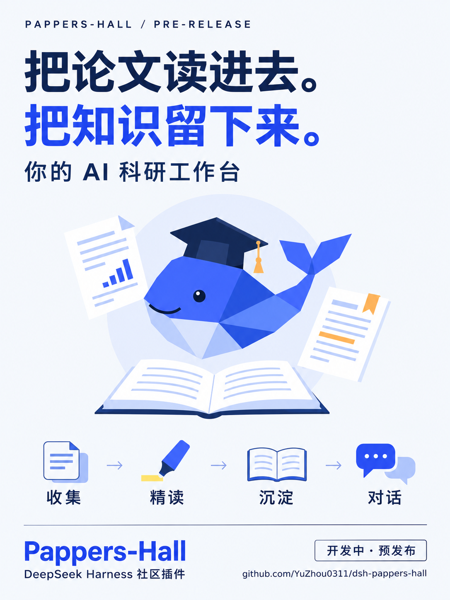
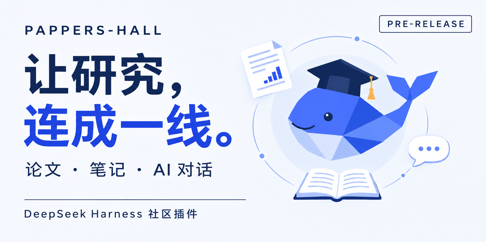
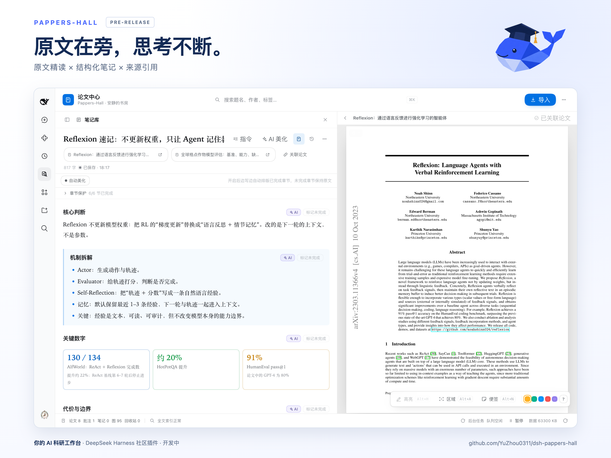

Brand & Press Kit / 2026.11
把论文读进去，把知识留下来。
DeepSeek Harness 里的 AI 科研工作台 · 品牌视觉与真实产品场景

README 主视觉 · 1920 × 819 PNG中文原图 ↗ · English hero ↗


01 / The research workbench
研究的每一步，都接得起来。
四张 Chrome 浅色模式实拍，完整保留产品视口。点击图片查看 2880 × 1800 原图。

文件夹、标签与阅读状态，让文献积累有条理。
下载论文库截图 ↗

原文、图表与批注，留在同一个阅读现场。
下载原文图表截图 ↗

原文在旁，边读边写，把观点变成自己的知识。
下载并排笔记截图 ↗
把来源带进对话。画面为加入材料后的未发送草稿。
下载来源对话截图 ↗
02 / Share the idea
一套可以直接分享的视觉。
竖版海报、横版封面与实景卡片，保持同一形象、配色与预发布口径。

1086 × 1448 · 3:4
下载海报 ↗

1774 × 887 · 2:1
下载分享封面 ↗

2880 × 2160 · 4:3 · 真实界面排版
下载实景卡片 ↗

03 / The scholar whale
认真研究，也保留一点好奇。
简约的多边形蓝鲸，戴着深蓝学士帽与金色流苏。品牌插画由 Codex 图片生成工具制作，透明形象可用于角标、头像与演示页。
下载透明 PNG · 1254 × 1254 ↗#4D6BFE#132B56#F5F8FF#F4BD56
04 / Ready to use